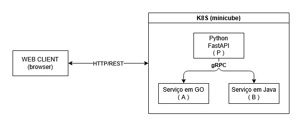

Especificação do Projeto
Resumo do que foi pedido pelo Prof. Fernando W. Cruz para o Projeto de Pesquisa – Parte 1.
Objetivo
Construir uma aplicação distribuída baseada em microserviços gRPC e fazer o deploy no Kubernetes (minikube).
Arquitetura exigida
Figura 1: Arquitetura de Comunicação do projeto

Autor: Gabriel Freitas, 2026.
- (P) — Web Server + gRPC Stub (API Gateway): recebe HTTP e repassa via gRPC
- (A) — gRPC Server: microserviço de desabafos
- (B) — gRPC Server: microserviço de reações ❤️
Requisitos obrigatórios
- A e B devem ser implementados em linguagem diferente de P
- A e B devem ser diferentes entre si
- P deve ter uma interface web acessível pelo browser
- Os três módulos rodam em containers separados no minikube
O que deve ser entregue
| Item |
Descrição |
| Relatório |
Documento com todas as seções abaixo |
| Arquivos de configuração |
Tudo necessário para replicar o laboratório |
| Vídeo |
~4 minutos por aluno demonstrando participação |
| Documentação de código |
Comentários e instruções de execução |
Seções do relatório
- Identificação do grupo
- Introdução
- Framework gRPC — protobuf, HTTP/2 e os 4 tipos de comunicação (com testes)
- Aplicação gRPC — descrição, dificuldades e comparativo com REST/JSON (com medição de performance)
- Kubernetes — arquitetura, comandos utilizados e configurações
- Conclusão individual por aluno + autoavaliação
- Apêndice (opcional)
Tipos de comunicação gRPC a demonstrar
| Tipo |
Descrição |
| Unary |
1 request → 1 response |
| Server Streaming |
1 request → N responses |
| Client Streaming |
N requests → 1 response |
| Bidirecional |
N requests ↔ N responses |
Arquivos .proto do projeto
Histórico de Versão